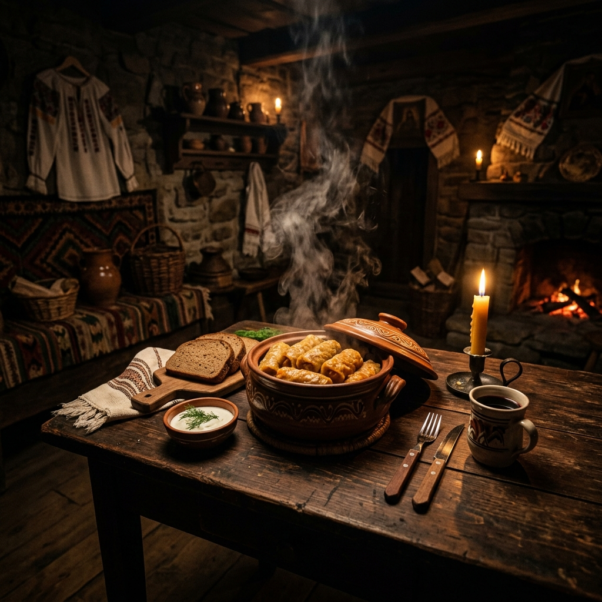
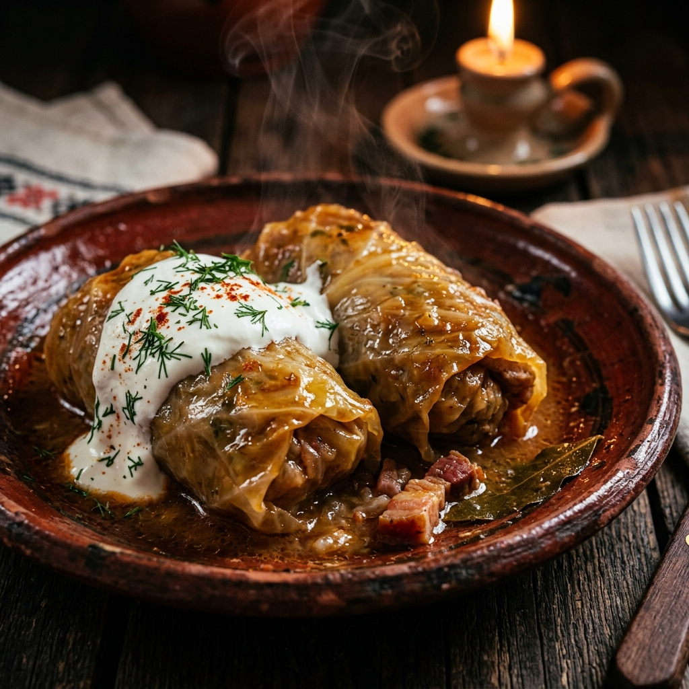
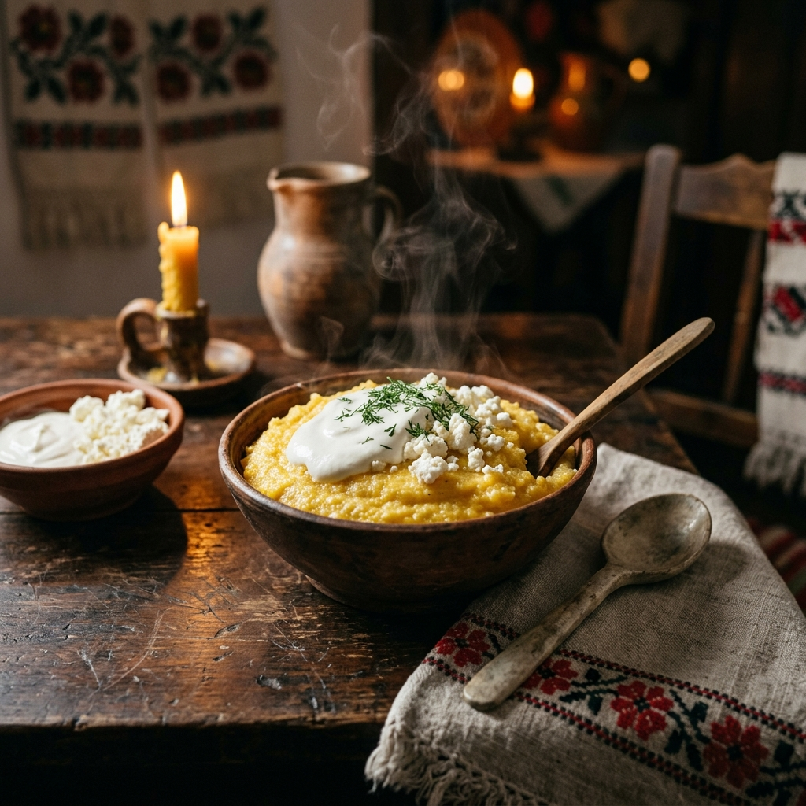
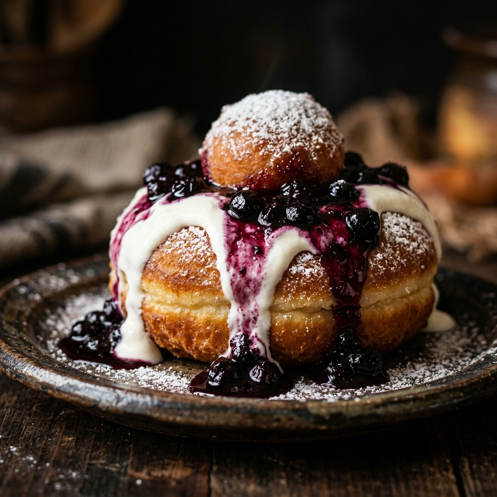

Donde cada receta es un pergamino que guarda la memoria milenaria de los Cárpatos,
y cada bocado cuenta una historia de fuego, tierra y hospitalidad.
— Ospitalitatea —
Antes de que existieran los restaurantes, existía la mesa del campesino rumano. Una puerta siempre abierta, un banco tallado a mano, un plato humeante de ciorbă esperando al viajero cansado.
Aquí la comida no se pesa en gramos, sino en corazón. El dacio que cazaba en los bosques sagrados de Brașov se volvió pastor, y su fogata se transformó en el hogar de la cocina rumana.
"Cada bocado que cruje entre los dientes es un eco de siglos de compartir."

Donde el fuego cuenta historias y cada plato es un poema escrito con ingredientes.

"Hojas de col fermentadas que abrazan con ternura una amalgama de carnes especiadas, cocinadas a fuego lento hasta que el tiempo se detiene. Es el abrazo de una abuela en una tarde de invierno."

"Harina de maíz que captura el sol dorado de los campos rumanos, fundiéndose en una textura de seda que espera ser coronada por el frescor ácido de la smântână."

"Nubes de queso fresco fritas hasta alcanzar un dorado celestial, bañadas en una lluvia de mermelada de frutos del bosque. El calor del postre se encuentra con el frío de la crema."
Un país dividido por montañas y ríos, unido por el amor a la mesa. Pasa el cursor sobre cada región.
Tierras altas bañadas por leyendas y bosques milenarios.
Una ventana a los sabores que hacen única a la cocina rumana.
Desde el fuego de la țuică hasta la dulzura del vișinată, cada trago es un viaje.
Aguardiente de ciruela tradicional, destilado en alambiques de cobre. El alma líquida de Rumanía, servida como bienvenida en todo hogar campesino.
Licor casero de guindas maceradas en alcohol y azúcar. Dulce, ácido y peligrosamente fácil de beber. Se sirve frío en las tardes de verano.
Refrescante bebida de flor de saúco fermentada, burbujeante y floral. La limonada de los campos rumanos, perfecta para los días calurosos.
Uno de los vinos más antiguos de Europa, dulce y dorado. Los catadores lo llaman "el oro líquido de Moldavia".
El vino rumano es la poesía líquida de una tierra que ha visto pasar imperios y ha guardado sus cepas como un tesoro.
— Proverbio de MoldaviaLa comida rumana no se come sola: viene acompañada de rituales, música y celebraciones que unen a comunidades enteras.
Cada 20 de diciembre, las familias rumanas se reúnen para la matanza del cerdo. Se preparan chiftele, tobă, caltaboș y el legendario piftie.
El cozonac, los huevos rojos teñidos con cebolla y el cordero asado son los protagonistas de la Pascua rumana.
La Fiesta de la Harina de Maíz celebra la cosecha de otoño. Pueblos enteros preparan mămăligă gigante en calderos de cobre.
En Rumanía no hay fiesta sin lăutari (músicos tradicionales). Mientras se sirve el sarmale, los violines y címbalos llenan la sala. La comida sin música es como un día sin sol — dicen los ancianos.
La cocina rumana no se aprende en los libros: se hereda en las manos que amasan, en el fuego que nunca se apaga y en la mesa que siempre tiene un lugar para el que llega.
— Crónicas del Caldero de Cobre